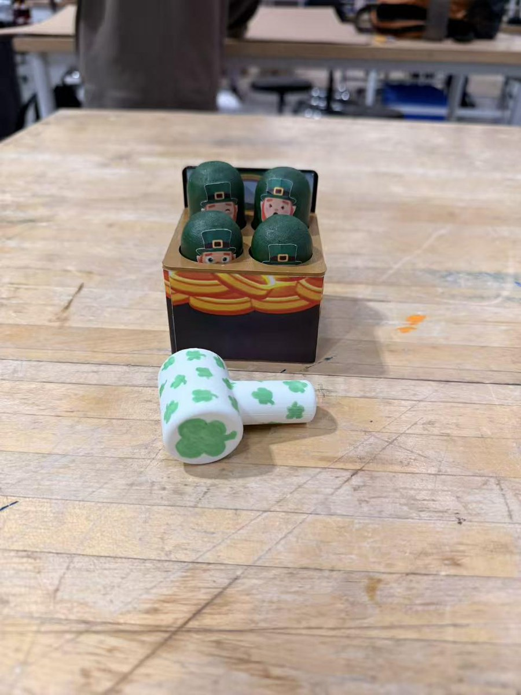
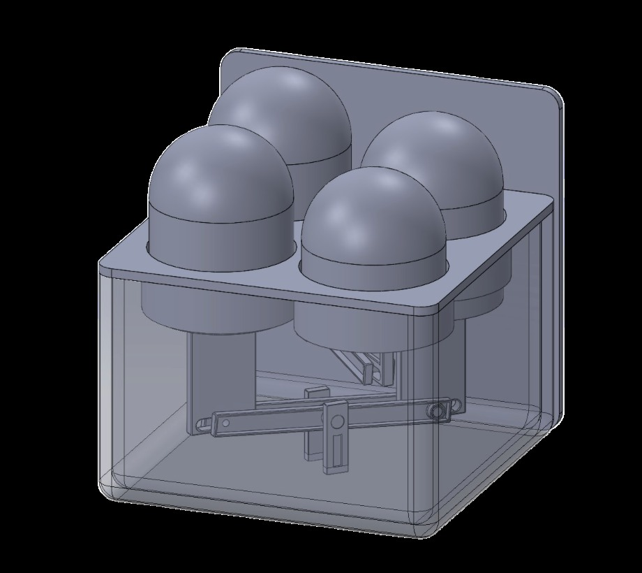
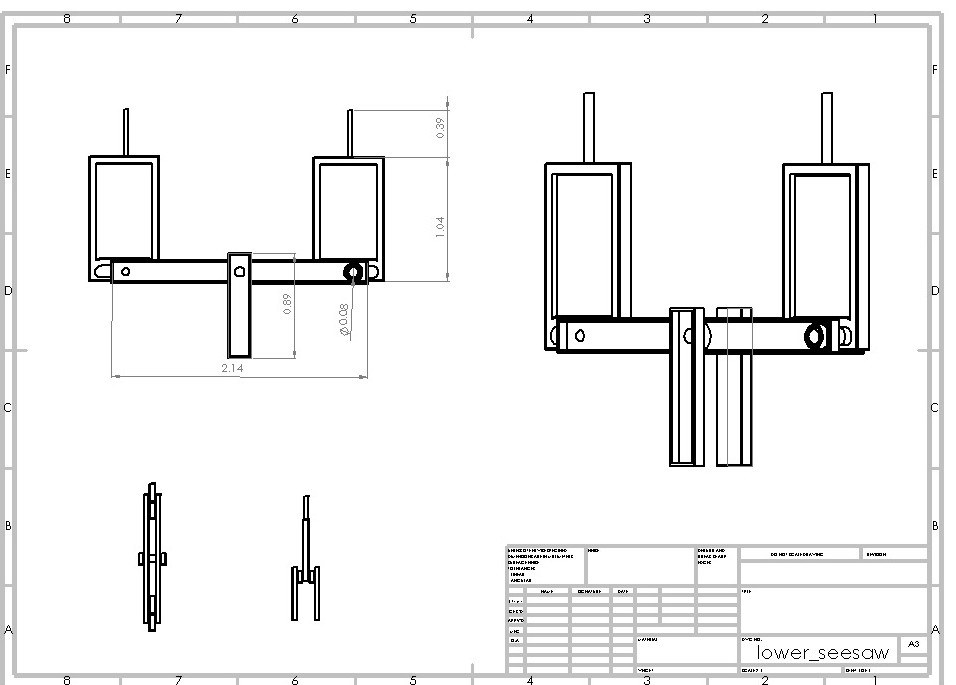
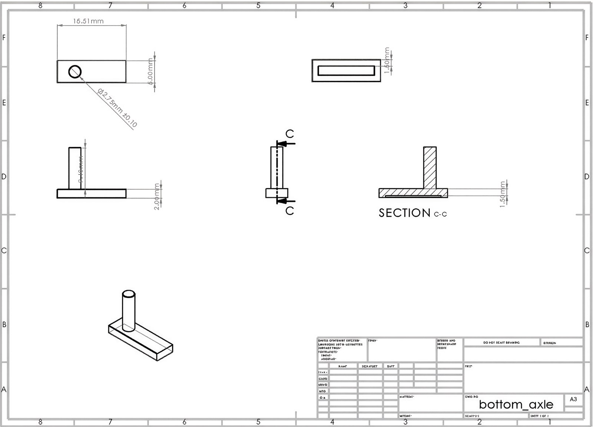
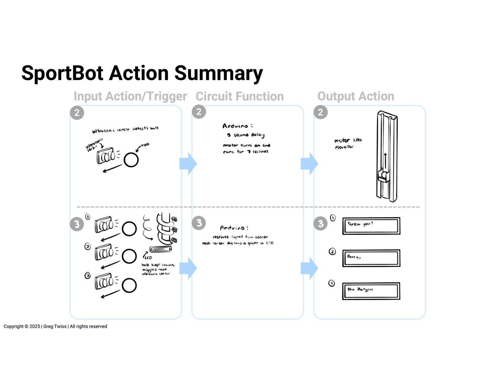

Whack-A-Mole
Pressing one mole raises another through a seesaw linkage. I made the upper and lower seesaw assemblies, axle and hole supports, axles, and connecting mounts in SolidWorks, along with their dimensioned drawings. The linkage transfers the input motion directly between the moles, which removed the need for the earlier suction-cup release.


Rapid prototyping
The first spring-and-suction-cup approach did not release consistently, so we changed to seesaws and printed the moving parts. The physical assemblies exposed axle alignment and rubbing that the CAD assembly did not reveal. I revised dimensions and clearances, then checked the motion again with new prints.
The important fit was at each pivot: enough clearance to rotate freely, but not so much that the mole could tilt and rub against the housing. Making the clearance explicit in CAD let me change that fit deliberately between prints.

Design for manufacturing
For the proposed production version, I worked through how the printed parts would change for injection-molded ABS. More consistent wall thickness reduces uneven cooling and the risk of sink or warping. Fillets soften abrupt section changes, while avoiding undercuts lets the part release from a simpler two-part mold.
I also used chamfers to help parts locate during assembly. This changed how I approached DFM: the geometry had to account for mold opening and assembly access as well as the motion of the finished toy. The printed prototype established the mechanism; the molding work addressed how to produce the parts repeatedly.
Fits and production planning
One pivot used a 2.75 mm axle inside a 3.05 mm hole, leaving 0.30 mm of nominal diametral clearance. I used tolerance analysis to check how variation in both dimensions changes that clearance. With ±0.10 mm on each dimension, the RSS combination is about 0.14 mm; this statistical estimate does not replace a worst-case fit check.
I used SolidWorks Plastics and worked through press size, cavity count, cycle rate, and assembly cost for the production proposal. The estimate was about $0.50 per toy at one million units. That figure depends on the proposed volume and process assumptions.

Teardown and SportBot
Disassembling an RC car and controller gave me examples of molded housings and snap fits before planning the toy’s production version. I documented the components, materials, and costs to connect each part’s function with how it was made and assembled.
For SportBot, I worked on an elevator mechanism combined with electronic and microcontroller circuits. I documented the action sequence and schematics so the mechanical motion could be checked against the electrical triggers.
